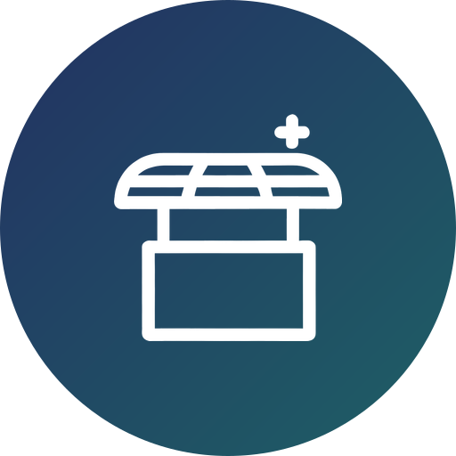

Young Tent-Makers (YTMs) are young adult missionaries who go in teams to the unreached people groups for one year to plant churches. They use their giftings, work experience, and specialties to pioneer church planting movements in the frontier nations, making disciples through incarnation mission.
Young adults bring their giftings, work experience, and specialties to the frontier nations.
YTMs go in teams to the unreached people groups, serving together for one full year on the field as a team.

InterCP’s professional mission plants marketplace churches or local churches through team ministry with diverse gifts.
The commission is one year on the field, after one month of training at InterCP International Headquarters. Summer dispatch is June–July; winter, December–January.
YTMs are Vision School graduates with six months of young adult ministry.
Back home, YTMs lead workplace ministries and return for short-term church-planting mission trips.